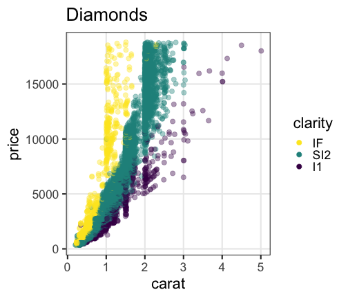
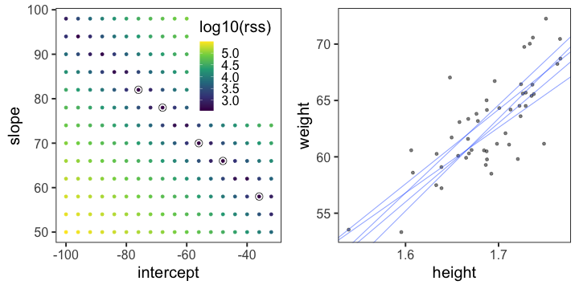
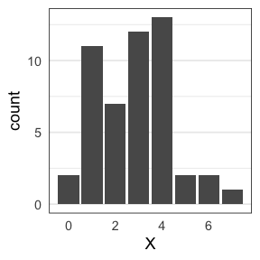
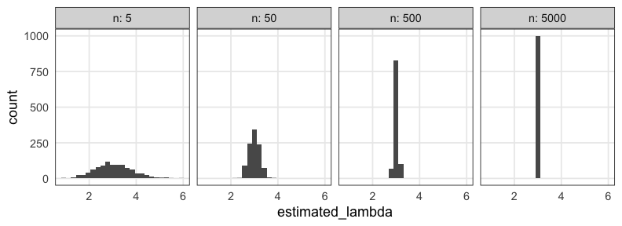
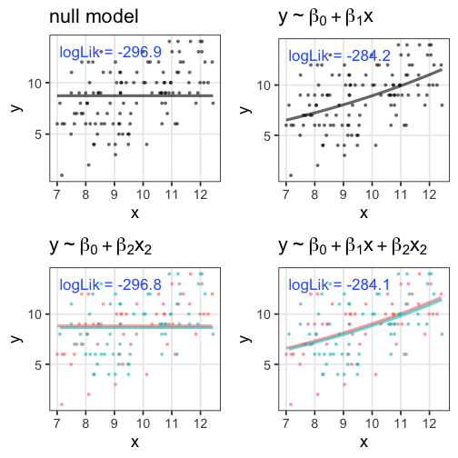

Rにやらせて楽しよう — データの可視化と下ごしらえ
(Graduate School of Life Sciences, Tohoku University)
- 入門1: データ解析の全体像。Rを使うメリット。Rの基本。
- 入門2: データ可視化の重要性と方法。
- データ構造の処理1: 抽出、集約など。
- データ構造の処理2: 結合、変形など。
- データ内容の処理: 数値、文字列、日時など。
- 統計モデリング基礎: 確率分布、尤度、一般化線形モデル
データを使ってやりたいこと
- 現象を理解したい
- 将来を予測したい
- ものを分類・判別したい
- 挙動を制御したい
- 新しい何かを生成したい
そのために解析は必要？ 未加工の生データこそ宝？
データ解析って必要？ 生データ見ればいいべ？
往々にして複雑過ぎ、情報多すぎ、そのままでは手に負えない
print(ggplot2::diamonds)
carat cut color clarity depth table price x y z
<dbl> <ord> <ord> <ord> <dbl> <dbl> <int> <dbl> <dbl> <dbl>
1 0.23 Ideal E SI2 61.5 55 326 3.95 3.98 2.43
2 0.21 Premium E SI1 59.8 61 326 3.89 3.84 2.31
3 0.23 Good E VS1 56.9 65 327 4.05 4.07 2.31
4 0.29 Premium I VS2 62.4 58 334 4.20 4.23 2.63
--
53937 0.72 Good D SI1 63.1 55 2757 5.69 5.75 3.61
53938 0.70 Very Good D SI1 62.8 60 2757 5.66 5.68 3.56
53939 0.86 Premium H SI2 61.0 58 2757 6.15 6.12 3.74
53940 0.75 Ideal D SI2 62.2 55 2757 5.83 5.87 3.64
ダイヤモンド53,940個について10項目の値を持つデータセット
要約統計量を見てみよう
各列の平均とか標準偏差とか:
stat carat depth table price x y z
<chr> <dbl> <dbl> <dbl> <dbl> <dbl> <dbl> <dbl>
1 mean 0.80 61.75 57.46 3932.80 5.73 5.73 3.54
2 sd 0.47 1.43 2.23 3989.44 1.12 1.14 0.71
3 max 5.01 79.00 95.00 18823.00 10.74 58.90 31.80
大きさ carat と価格 price の相関係数は 0.92 (かなり高い)。
生のままよりは把握しやすいかも。
しかし要注意…
平均値ばかり見て可視化を怠ると構造を見逃す


データ可視化は理解の第一歩
情報をうまく絞って整理 → 直感的にわかる
carat が大きいほど price も高いらしい。
その度合いは clarity によって異なるらしい。
統計とは
データをうまくまとめ、それに基づいて推論するための手法。
- 記述統計: データそのものを要約する
- 要約統計量 (e.g., 平均、標準偏差、etc.)
- 作図、作表
- 推測統計: データの背後にある母集団・生成過程を考える
- 数理モデル
- 確率分布
- パラメータ(母数)
「グラフを眺めてなんとなく分かる」以上の分析にはモデルが必要
モデルとは
対象システムを単純化・理想化して扱いやすくしたもの
- Mathematical Model 数理モデル

- 数学的な方程式として記述されるもの。
- e.g., Lotka-Volterra eq., Hill eq.
- Computational Model 数値計算モデル

- 数値計算の手続きとして記述されるもの。
- e.g., Schelling’s Segregation Model, tumopp
- Concrete Model 具象モデル

- 具体的な事物で作られるもの。
- e.g., San Francisco Bay-Delta Model
データ科学における数理モデル
データ生成をうまく真似できそうな仮定の数式表現。

データ科学における数理モデル
データ生成をうまく真似できそうな仮定の数式表現。
e.g., 大きいほど高く売れる: $\text{price} = A \times \text{carat} + B + \epsilon$

新しく採れたダイヤモンドの価格予想とかにも使える。
このように「YをXの関数として表す」ようなモデルを回帰と呼ぶ。
今回は回帰を軸とした統計モデリングの解説
単純な直線あてはめから出発し、ちょっとずつ統計モデリング。

回帰は教師あり機械学習の一種とも言える

でも統計モデリングはいわゆる“機械学習”とは違う気もする…?
モデリングにおける2つのアプローチ

どっちも知っておいて使い分けたい
| 項目 | 統計モデリング | 近年の機械学習 |
|---|---|---|
| 例 | 一般化線形モデル 階層ベイズモデル |
ランダムフォレスト ニューラルネットワーク |
| モデル構造 | 単純化したい | 性能のためなら複雑化 |
| モデル解釈 | ここが強み | 難しい。重視しない。途上。 |
| 予測・生成 | うまくすれば頑健 | 主目的。強力。高精度 |
| データ量 | 少なくてもそれなり | 大量に必要 |
| 計算量 | 場合による | 場合による |
本講義のお品書き

久保先生の"緑本"こと
「データ解析のための統計モデリング入門」
をベースに回帰分析の概要を紹介。
- イントロ
- 統計モデルの基本
- 確率変数・確率分布 👈 本日の主役
- 尤度・最尤推定
- 一般化線形モデル、
混合モデル ベイズ統計、階層ベイズモデル
回帰のキモは線ではなく分布
回帰モデルの2段階
-
Define a family of models: だいたいどんな形か、式をたてる
- 直線: $y = a_1 + a_2 x$
- 対数: $\log(y) = a_1 + a_2 x$
- 二次曲線: $y = a_1 + a_2 x^2$
-
Generate a fitted model: データに合うようにパラメータを調整
- $y = 3x + 7$
- $y = 9x^2$
たぶん身長が高いほど体重も重い
なんとなく $y = a x + b$ でいい線が引けそう

たぶん身長が高いほど体重も重い
なんとなく $y = a x + b$ でいい線が引けそう
じゃあ切片と傾き、どう決める？

最小二乗法
回帰直線からの残差平方和(RSS)を最小化する。
残差平方和(RSS)が最小となるパラメータを探せ
ランダムに試してみて、上位のものを採用
残差平方和(RSS)が最小となるパラメータを探せ
グリッドサーチ: パラメータ空間の一定範囲内を均等に試す

こうした最適化の手法はいろいろあるけど、ここでは扱わない。
これくらいなら一瞬で計算してもらえる
par_init = c(intercept = 0, slope = 0)
result = optim(par_init, fn = rss_weight, data = df_weight)
result$par
intercept slope
-50.54532 67.18659
何でもかんでも直線あてはめではよろしくない

- 観察データは常に正の値なのに予測が負に突入してない？
- 縦軸は整数。しかものばらつきが横軸に応じて変化？
何でもかんでも直線あてはめではよろしくない

- 観察データは常に正の値なのに予測が負に突入してない？
- 縦軸は整数。しかものばらつきが横軸に応じて変化？
- データに合わせた統計モデルを使うとマシ
ちょっとずつ線形モデルを発展させていく
線形モデル LM (単純な直線あてはめ)
↓ いろんな確率分布を扱いたい 👈 統計モデルの重要な部品
一般化線形モデル GLM
↓ 個体差などの変量効果を扱いたい
一般化線形混合モデル GLMM
↓ もっと自由なモデリングを！
階層ベイズモデル HBM
データ解析のための統計モデリング入門 久保拓弥 2012 より改変
確率分布
発生する事象(値)と頻度の関係。
手元のデータを数えて作るのが経験分布
e.g., サイコロを12回投げた結果、学生1000人の身長

一方、少数のパラメータと数式で作るのが理論分布。
(こちらを単に「確率分布」と呼ぶことが多い印象）
確率変数$X$はパラメータ$\theta$の確率分布$f$に従う…?
$X \sim f(\theta)$
e.g.,
コインを3枚投げたうち表の出る枚数 $X$ は二項分布に従う。
$X \sim \text{Binomial}(n = 3, p = 0.5)$

一緒に実験してみよう。
試行を繰り返して記録してみる
コインを3枚投げたうち表の出た枚数 $X$
試行1: 表 裏 表 → $X = 2$
試行2: 裏 裏 裏 → $X = 0$
試行3: 表 裏 裏 → $X = 1$ 続けて $2, 1, 3, 0, 2, \ldots$

0と3はレア。1と2が3倍ほど出やすいらしい。
コイントスしなくても $X$ らしきものを生成できる
- コインを3枚投げたうち表の出る枚数 $X$
- $n = 3, p = 0.5$ の二項分布からサンプルする乱数 $X$
↓ サンプル
{2, 0, 1, 2, 1, 3, 0, 2, …}
これらはとてもよく似ているので
「コインをn枚投げたうち表の出る枚数は二項分布に従う」
みたいな言い方をする。逆に言うと
「二項分布とはn回試行のうちの成功回数を確率変数とする分布」
のように理解できる。
統計モデリングの一環とも捉えられる
コイン3枚投げを繰り返して得たデータ {2, 0, 1, 2, 1, 3, 0, 2, …}
↓ たった2つのパラメータで記述。情報を圧縮。
$n = 3, p = 0.5$ の二項分布で説明・再現できるぞ
こういうふうに現象と対応した確率分布、ほかにもある？
有名な確率分布、それに「従う」もの
- 離散一様分布
- コインの表裏、サイコロの出目1–6
- 幾何分布
- 成功率pの試行が初めて成功するまでの失敗回数
- 二項分布
- 成功率p、試行回数nのうちの成功回数
- ポアソン分布
- 単位時間あたり平均$\lambda$回起こる事象の発生回数
- ガンマ分布
- ポアソン過程でk回起こるまでの待ち時間
- (k = 1のとき指数分布と呼ばれる)
- 正規分布
- 確率変数の和、平均値
離散一様分布
同じ確率で起こるn通りの事象のうち実際に起こった事象X
e.g., コインの表裏、サイコロの出目1–6

🔰 一様分布になりそうな例を考えてみよう
幾何分布 $~\text{Geom}(p)$
成功率pの試行が初めて成功するまでの失敗回数X
e.g., コイントスで表が出るまでに何回裏が出るか

\[ \text{Prob}(X = k \mid p) = p (1 - p)^k \]
「初めて成功するまでの試行回数」とする定義もある。
🔰 幾何分布になりそうな例を考えてみよう
二項分布 $~\text{Binomial}(n,~p)$
確率$p$で当たるクジを$n$回引いたうち当たった回数X。平均は$np$。
\[ \text{Prob}(X = k \mid n,~p) = \binom n k p^k (1 - p)^{n - k} \]
🔰 二項分布になりそうな例を考えてみよう
ポアソン分布 $~\text{Poisson}(\lambda)$
単位時間(空間)あたりに平均$\lambda$回発生する事象が実際に起きた回数X。
e.g., 1時間あたりのメッセージ受信件数、メッシュ区画内の生物個体数

\[ \text{Prob}(X = k \mid \lambda) = \frac {\lambda^k e^{-\lambda}} {k!} \]
二項分布の極限 $(\lambda = np;~n \to \infty;~p \to 0)$。
めったに起きないことを何回も試行するような感じ。
指数分布 $~\text{Exp}(\lambda)$
ポアソン過程の事象の発生間隔x。平均は $1 / \lambda$ 。
e.g., メッセージの受信間隔、道路沿いに落ちてる手袋の間隔

\[ \text{Prob}(x \mid \lambda) = \lambda e^{-\lambda x} \]
幾何分布の連続値版。
🔰 ポアソン分布・指数分布になりそうな例を考えてみよう
ガンマ分布 $~\text{Gamma}(k,~\lambda)$
ポアソン過程の事象k回発生までの待ち時間x
e.g., メッセージを2つ受信するまでの待ち時間

\[ \text{Prob}(x \mid k,~\lambda) = \frac {\lambda^k x^{k - 1} e^{-\lambda x}} {\Gamma(k)} \]
指数分布をkのぶん右に膨らませた感じ。
shapeパラメータ $k = 1$ のとき指数分布と一致。
正規分布 $~\mathcal{N}(\mu,~\sigma)$
平均 $\mu$、標準偏差 $\sigma$ の美しい分布。よく登場する。
e.g., $\mu = 50, ~\sigma = 10$ (濃い灰色にデータの95%, 99%が含まれる):

\[ \text{Prob}(x \mid \mu,~\sigma) = \frac 1 {\sqrt{2 \pi \sigma^2}} \exp \left(\frac {-(x - \mu)^2} {2\sigma^2} \right) \]
正規分布に近づくものがいろいろある
標本平均の反復(中心極限定理); e.g., 一様分布 [0, 100) から40サンプル

大きい$n$の二項分布

正規分布に近づくものがいろいろある
大きい$\lambda$のポアソン分布

平均値固定なら$k$が大きくなるほど左右対称に尖るガンマ分布

有名な確率分布対応関係ふりかえり
- 離散一様分布
- コインの表裏、サイコロの出目1–6
- 幾何分布
- 成功率pの試行が初めて成功するまでの失敗回数
- 二項分布
- 成功率p、試行回数nのうちの成功回数
- ポアソン分布
- 単位時間あたり平均$\lambda$回起こる事象の発生回数
- ガンマ分布
- ポアソン過程でk回起こるまでの待ち時間
- (k = 1のとき指数分布と呼ばれる)
- 正規分布
- 確率変数の和、平均値。使い勝手が良く、よく登場する。
現実には、確率分布に「従わない」ことが多い
植物100個体から8個ずつ種子を取って植えたら全体で半分ちょい発芽。
親1個体あたりの生存数はn=8の二項分布になるはずだけど、
極端な値(全部死亡、全部生存)が多かった。
「それはなぜ？」と考えて要因を探るのも統計モデリングの仕事。
「普通はこれに従うはず」を理解してこそできる思考。
疑似乱数生成器 Pseudo Random Number Generator
コンピューター上でランダムっぽい数値を出力する装置。
実際には決定論的に計算されているので、
シード(出発点)と呼び出し回数が同じなら出る数も同じになる。
set.seed(42)
runif(3L)
# 0.9148060 0.9370754 0.2861395
runif(3L)
# 0.8304476 0.6417455 0.5190959
set.seed(42)
runif(6L)
# 0.9148060 0.9370754 0.2861395 0.8304476 0.6417455 0.5190959
シードに適当な固定値を与えておくことで再現性を保てる。
ただし「このシードじゃないと良い結果が出ない」はダメ。
さまざまな「分布に従う」乱数を生成することもできる。
いろんな乱数を生成・可視化して感覚を掴もう
🔰 ?rbinom などヘルプを参照しつつたくさん試そう。
🔰 e.g., 1%の当たりを狙って100連ガチャを回した場合とか
n = 100
x = sample.int(6, n, replace = TRUE)
x = runif(n, min = 0, max = 1)
x = rgeom(n, prob = 0.5)
x = rbinom(n, size = 3, prob = 0.5)
x = rpois(n, lambda = 10)
x = rnorm(n, mean = 50, sd = 10)
print(x)
p1 = ggplot(data.frame(x)) + aes(x)
p1 + geom_histogram() # for continuous values
p1 + geom_bar() # for discrete values
データに分布をあてはめたい
ある植物を50個体調べて、それぞれの種子数Xを数えた。

カウントデータだからポアソン分布っぽい。
ポアソン分布のパラメータ $\lambda$ はどう決める？
データに分布をあてはめたい
ある植物を50個体調べて、それぞれの種子数Xを数えた。

カウントデータだからポアソン分布っぽい。
ポアソン分布のパラメータ $\lambda$ はどう決める？
(黒が観察データ。青がポアソン分布。よく重なるのは？)
尤度 (likelihood)
尤もらしさ。 モデルのあてはまりの良さの尺度のひとつ。
あるモデル$M$の下でそのデータ$D$が観察される確率。
定義通り素直に書くと
$\text{Prob}(D \mid M)$
データ$D$を固定し、モデル$M$の関数とみなしたものが尤度関数:
$L(M \mid D)$
モデルの構造も固定してパラメータ$\theta$だけ動かす場合はこう書く:
$L(\theta \mid D)$ とか $L(\theta)$ とか
尤度を手計算できる例
コインを5枚投げた結果 $D$: 表 4, 裏 1
表が出る確率 $p = 0.5$ と仮定:
表が出る確率 $p = 0.8$ と仮定:
$L(0.8 \mid D) > L(0.5 \mid D)$
$p = 0.8$ のほうがより尤もらしい。
種子数ポアソン分布の例でも尤度を計算してみる
ある植物が作った種子を数える。$n = 50$個体ぶん。

この中では $\lambda = 3$ がいいけど、より尤もらしい値を求めたい。
最尤推定 Maximum Likelihood Estimation
扱いやすい 対数尤度 (log likelihood) にしてから計算する。
一階微分が0になる $\lambda$ を求めると…標本平均と一致。

最尤推定を使っても“真のλ”は得られない
今回のデータは真の生成ルール“$X \sim \text{Poisson}(\lambda = 3.0)$”で作った。
「50個体サンプル→最尤推定」を1,000回繰り返してみると:

サンプルの取れ方によってはかなりズレた推定をしてしまう。
(標本データへのあてはまりはかなり良く見えるのに！)
サンプルサイズを増やすほどマシにはなる
“$X \sim \text{Poisson}(\lambda = 3.0)$”からnサンプル→最尤推定を1,000回繰り返す:

Q. じゃあどれくらいのサンプル数nを確保すればいいのか？
A. 推定したい統計量とか、許容できる誤差とかによる。
すべてのモデルは間違っている
確率分布がいい感じに最尤推定できたとしても、
それはあくまでモデル。仮定。近似。
All models are wrong, but some are useful. — George E. P. Box
統計モデリングの道具 — まとめ
- 確率変数 $X$
- 確率分布 $X \sim f(\theta)$
- 少ないパラメータ $\theta$ でばらつきの様子を表現
- この現象はこの分布を作りがち(〜に従う) という知見がある
- 尤度
- あるモデルでこのデータになる確率 $\text{Prob}(D \mid M)$
- データ固定でモデル探索 → 尤度関数 $L(M \mid D),~L(\theta \mid D)$
- 対数を取ったほうが扱いやすい → 対数尤度 $\log L(M \mid D)$
- これを最大化するようなパラメータ $\hat \theta$ 探し ＝ 最尤法
ここまで見てきた統計モデル
確率変数$X$はパラメータ$\theta$の確率分布$f$に“従う”: $X \sim f(\theta) $
e.g., ある植物が作る種の数$X$は平均値$\lambda$のポアソン分布に従う:
これを一般化線形モデル(GLM)として見ることもできる。
一般化線形モデル(GLM)として記述してみる
個体$i$の種子数$y_i$は平均値$\lambda_i$のポアソン分布に従う。
平均値$\lambda_i$は他のデータによらず$\beta_0$で一定。
種子数をY軸にして、式を2つに分けただけ…?
説明変数を含むモデルを見ればご利益が分かるかも。
説明変数が1つある一般化線形モデル
個体$i$の種子数$y_i$は平均値$\lambda_i$のポアソン分布に従う。
平均値の対数$\log(\lambda_i)$はその個体の大きさ$x_i$に比例する。

この場合は単回帰。説明変数が複数あると重回帰。
複数の説明変数を同時に扱う重回帰
\[\begin{split} y_i &\sim \text{Poisson}(\lambda_i) \\ \log(\lambda_i) &= \beta_0 + \beta_1 x_{1i} + \beta_2 x_{2i} + \ldots \end{split}\]
気温も湿度も高いほどビールが売れる、とか
今度は確率分布とリンク関数を変えてみよう。
ロジスティック回帰
- 確率分布: 二項分布
- リンク関数: $\text{logit}(p) = \log \frac {p} {1 - p}$
何かの成否に対する何かの因子の影響、とか
客10人中$y_i$人がビールを注文。
その日$i$の気温$x_i$によって割合が変化。
\[\begin{split} y_i &\sim \text{Binomial}(n,~p_i) \\ \text{logit}(p_i) &= \beta_0 + \beta_1 x_i \\ p_i &= \frac 1 {1 + e^{-(\beta_0 + \beta_1 x_i)}} \end{split}\]
ロジスティック関数↑
ロジスティック回帰 (狭義)
- 確率分布: ベルヌーイ分布 ($n = 1$ の二項分布)
- リンク関数: $\text{logit}(p) = \log \frac {p} {1 - p}$
何かの成否に対する何かの因子の影響、とか
風が吹けば桶屋が儲かる。
\[\begin{split} y_i &\sim \text{Bernoulli}(p_i) \\ &= \text{Binomial}(1,~p_i) \\ \text{logit}(p_i) &= \beta_0 + \beta_1 x_i \\ p_i &= \frac 1 {1 + e^{-(\beta_0 + \beta_1 x_i)}} \end{split}\]
ロジスティック関数↑
一般線形モデル (“化”無し) はGLMの一種
- 確率分布: 正規分布
- リンク関数: 恒等関数(なにもせずそのまま)
\[\begin{split} y_i &\sim \mathcal{N}(\mu_i,~\sigma^2) \\ \text{identity}(\mu_i) &= \beta_0 + \beta_1 x_i \end{split}\]
最小二乗法の直線あてはめと結果的に同じになる。
単回帰・重回帰と言ったとき一般線形モデルを前提とする人もいる。
分散分析 (Analysis of variance, ANOVA) as GLM
質的な説明変数を持つ正規分布・恒等リンクのGLM、と解釈可能。
指示変数 (0 or 1) に変換してから重回帰する。
| 天気 | → | $x_1$ ☀️ 晴れ | $x_2$ ☔️ 雨 |
|---|---|---|---|
| ☁️ くもり | 0 | 0 | |
| ☀️ 晴れ | 1 | 0 | |
| ☔️ 雨 | 0 | 1 |
\[\begin{split} y_i &= \mathcal{N}(\mu_i,\sigma^2) \\ \mu_i &= \beta_0 + \beta_1 x_{1i} + \beta_2 x_{2i} \end{split}\]
くもり☁️ $\beta_0$ を基準に、晴れの効果☀️ $\beta_1$ と雨の効果☔️ $\beta_2$ が求まる。
GLMなら確率分布・リンク関数を変えてもっと柔軟にモデリングできる。
共分散分析 (Analysis of covariance, ANCOVA) as GLM
質的変数と量的変数を両方含むGLM、と解釈可能。
正規分布・等分散・恒等リンクなどが仮定される。
| 天気 | → | $x_1$ ☀️ 晴れ | $x_2$ ☔️ 雨 |
|---|---|---|---|
| ☁️ くもり | 0 | 0 | |
| ☀️ 晴れ | 1 | 0 | |
| ☔️ 雨 | 0 | 1 |
\[\begin{split} y_i &= \mathcal{N}(\mu_i,\sigma^2) \\ \mu_i &= \beta_0 + \beta_1 x_{1i} + \beta_2 x_{2i} + \beta_3 x_{3i} \end{split}\]
GLMなら確率分布・リンク関数を変えてもっと柔軟にモデリングできる。
一般化線形モデル(GLM)ふりかえり
確率分布・リンク関数を変えて柔軟にモデリングできる。
特定の組み合わせには名前がある。
| 名前 | 確率分布 | リンク関数 | 説明変数 |
|---|---|---|---|
| ポアソン回帰 | ポアソン分布 | log | |
| ロジスティック回帰 | 二項分布 | logit | |
| 一般線形回帰 | 正規分布 | 恒等 | |
| 分散分析 | 正規分布 | 恒等 | 質的変数 |
| 共分散分析 | 正規分布 | 恒等 | 質的変数+量的変数 |
リンク関数をもう少しだけ掘り下げたい。
リンク関数
統計モデリングにおいて「まっすぐ以外も表現できる」意味
- $\text{identity}(\mu_i)$
- $\mu_i = \beta_0 + \beta_1 x_{1i} + \beta_2 x_{2i} + \ldots$
- 説明変数の効果が足し算的に働く。
- $\log(\lambda_i)$
- $\lambda_i = e^{\beta_0 + \beta_1 x_{1i} + \beta_2 x_{2i} + \ldots} = e^{\beta_0} \times e^{\beta_1 x_{1i}} \times e^{\beta_2 x_{2i}} \times \ldots$
- 説明変数の効果が掛け算的に働く。
e.g., $\Delta x_1$ 増えると $e^{\beta_1 \Delta x_{1}}$ 倍になる - $\text{logit}(p_i)$
- $p_i = \frac 1 {1 + e^{-(\beta_0 + \beta_1 x_i + \ldots)}} $ (ロジスティック関数)
- 説明変数の効果が頭打ちになる。
e.g., $\lim_{x \to -\infty} p = 0;~\lim_{x \to \infty} p = 1$
ほかに probit, inverse, sqrt, etc.
データはひとつ、モデルはたくさん
どう選ぶ？
- メカニズム的に納得できるものを選ぶ
- ポアソン過程のカウントならポアソン分布、間隔ならガンマ分布
- n回中k回のように割合的なカウントなら二項分布
- データを可視化してみて、それっぽい形・性質のものを選ぶ
- 左右対称のひと山ならとりあえず正規分布
- 負の値を取らないならガンマ分布
- 直線的か、指数関数的か、頭打ちか、などなど
客観的な指標もほしい。
モデルの尤もらしさといえば…
尤度 (likelihood)
あるモデル$M$の下でそのデータ$D$が観察される確率:
$\text{Prob}(D \mid M)$
データ$D$を固定し、モデル$M$の関数とみなしたものが尤度関数:
$L(M \mid D)$
モデルの構造も固定してパラメータ$\theta$だけ動かす場合はこう書く:
$L(\theta \mid D)$ or $L(\theta)$
対数尤度 $\log L$ の形にしたほうがいろいろ便利。
各モデルで最適なパラメータを探して、比較:
$\log L^* (M_1) \text{ vs. } \log L^* (M_2) \text{ vs. } \log L^* (M_3) \ldots$
たしかに尤度はあてはまりの良さを表してそう
この場合は直線回帰よりもポアソン回帰が良さそう:
この調子で、より尤度の高いモデルを探していけばいいだろうか？
あてはまりが良ければいいってもんでもない
- 過剰適合 / 過学習 / overfitting
- パラメータを増やせば現データへの適合度・尤度を高くできるが、
予測・理解の役には立たなくなる。
帰無モデル: 説明変数なし。切片のみ。
飽和モデル: データ点の数 ≤ パラメータの数。“データ読み上げ”的モデル
無駄な説明変数を加えても尤度は上がる
ある植物が作る種の数 $y$ は個体のサイズ $x$ に応じて増える。
観察時に着てた服の色 $x_2$ を追加すると尤度が上がる……?

AIC: 赤池情報量基準
\[\begin{split} \text{AIC} = -2 (\log L^* - k) = -2 \log L^* + 2k \end{split}\]
- AICが小さいほど予測精度の良いモデル。
- 尤度は上げたい。
- パラメータ数 $k$ が増えるとペナルティ。
- どのデータに対する当てはまりを目指すかという観点
- 「手元のデータ」に対する対数尤度は $\log L^*$
- 「真のメカニズムから出てくる未来のデータ」に対する
平均対数尤度の推定量は $(\log L^* - k)$
(Kullback–Leibler情報量を使って導出するらしい)
- 「手元のデータ」に対する対数尤度は $\log L^*$
無駄な説明変数の追加でAIC増加
ある植物が作る種の数 $y$ は個体のサイズ $x$ に応じて増える。
観察時に着てた服の色 $x_2$ を追加したモデルはAICが増加。
ほかの情報量基準
モデル選択の心構え
「正しい」ものを選べるわけではない。
予測・理解に useful なものを何らかの基準で選ぶだけ。
All models are wrong, but some are useful. — George E. P. Box
現実的な注意点・悩みどころ
- 多重共線性(multicollinearity):
- 説明変数同士が強い相関関係にある
- 変数変換:
- 気安くやるべきじゃないけど、対数変換などしばしば有用
- 割り算した値は危険
- 交互作用を入れると解釈が難しくなる。
交互作用
ある説明変数の効果が、別の説明変数によって異なる。
e.g., ビール売上の温度依存性が天気によって異なる。
| 天気 | $x_1$ |
|---|---|
| ☀️ 晴れ | 1 |
| ☔️ 雨 | 0 |
\[\begin{split} y_i &= \mathcal{N}(\mu_i,\sigma^2) \\ \mu_i &= \beta_0 + \beta_1 x_{1i} + \beta_2 x_{2i} + \beta_{1,2} x_{1i} x_{2i} \end{split}\]
雨の日は $x_{1i} = 0$ のため $\beta_0,~\beta_2$ の項だけ。
晴れの日はそれに加えて $\beta_1,~\beta_{1,2}$ の項も。

解釈が一気に難しくなるのでむやみに使わない。
一般化線形モデル座学まとめ
- 何はともあれ散布図を描く
- 適切な確率分布・リンク関数・説明変数を考える
- パラメータを最尤推定する
- 尤度は「手元のデータへのあてはまり」
- モデルを比較するときは情報量基準を参考にする
penguinsデータセット
https://allisonhorst.github.io/palmerpenguins/

# install.packages("palmerpenguins")
library(palmerpenguins)
print(penguins)
penguins_colors = c(Adelie = "darkorange", Chinstrap = "purple", Gentoo = "cyan4")
penguinsデータセット
https://allisonhorst.github.io/palmerpenguins/
species island bill_length_mm bill_depth_mm flipper_length_mm body_mass_g sex year
<fct> <fct> <dbl> <dbl> <int> <int> <fct> <int>
1 Adelie Torgersen 39.1 18.7 181 3750 male 2007
2 Adelie Torgersen 39.5 17.4 186 3800 female 2007
3 Adelie Torgersen 40.3 18.0 195 3250 female 2007
4 Adelie Torgersen NA NA NA NA NA 2007
--
341 Chinstrap Dream 43.5 18.1 202 3400 female 2009
342 Chinstrap Dream 49.6 18.2 193 3775 male 2009
343 Chinstrap Dream 50.8 19.0 210 4100 male 2009
344 Chinstrap Dream 50.2 18.7 198 3775 female 2009
単回帰の練習: 1. まず作図
どうやら、重いペンギンほど翼長も長い。
p_penweight = ggplot(penguins) +
aes(body_mass_g, flipper_length_mm) +
geom_point(shape = 16, alpha = 0.66) +
theme_bw(base_size = 20) +
theme(panel.grid.minor = element_blank())
p_penweight
単回帰の練習: 2. モデル作成、フィッティング
fit1 = glm(flipper_length_mm ~ body_mass_g, data = penguins)
broom::tidy(fit1)
term estimate std.error statistic p.value
<chr> <dbl> <dbl> <dbl> <dbl>
1 (Intercept) 136.72955927 1.996835406 68.47312 5.712947e-201
2 body_mass_g 0.01527592 0.000466836 32.72223 4.370681e-107
broom::glance(fit1)
null.deviance df.null logLik AIC BIC deviance df.residual nobs
<dbl> <int> <dbl> <dbl> <dbl> <dbl> <int> <int>
1 67426.54 341 -1145.518 2297.035 2308.54 16250.3 340 342
単回帰の練習: 3. フィッティング結果を作図
$y = 136.7 + 0.0153 x$
added1 = modelr::add_predictions(penguins, fit1)
p1 = p_penweight +
geom_line(aes(y = pred), data = added1, size = 1, color = "#3366ff")
p1

重回帰の練習: 1. まず作図
重いペンギンほど翼長も長い。翼長は種によっても違うかも。
p_penweight_color = p_penweight + aes(color = species) +
scale_color_manual(values = penguins_colors)
p_penweight_color

重回帰の練習: 2. モデル作成、フィッティング
Adelieを基準に、ChinstrapとGentooはそれより長め。
体重の効果は単回帰のときより小さい。
fit2 = glm(flipper_length_mm ~ body_mass_g + species, data = penguins)
broom::tidy(fit2)
term estimate std.error statistic p.value
<chr> <dbl> <dbl> <dbl> <dbl>
1 (Intercept) 1.588603e+02 2.3865766963 66.564071 2.450113e-196
2 body_mass_g 8.402113e-03 0.0006338976 13.254686 1.401600e-32
3 speciesChinstrap 5.597440e+00 0.7882166229 7.101398 7.334777e-12
4 speciesGentoo 1.567747e+01 1.0906590679 14.374308 6.800823e-37
broom::glance(fit2)
null.deviance df.null logLik AIC BIC deviance df.residual nobs
<dbl> <int> <dbl> <dbl> <dbl> <dbl> <int> <int>
1 67426.54 341 -1059.718 2129.437 2148.611 9839.073 338 342
重回帰の練習: 3. フィッティング結果を作図
added2 = modelr::add_predictions(penguins, fit2)
p2 = p_penweight_color +
geom_line(aes(y = pred), data = added2, size = 1)
p2

傾きも種によって違うかも。交互作用を入れてみたい。
交互作用の練習: モデル作成、フィッティング
Adelieを基準に、Chinstrapの傾きが結構違う。
切片の違いは解釈しにくくなった。
fit3 = glm(flipper_length_mm ~ body_mass_g * species, data = penguins)
broom::tidy(fit3)
term estimate std.error statistic p.value
<chr> <dbl> <dbl> <dbl> <dbl>
1 (Intercept) 165.244812649 3.5508916651 46.536146 1.561669e-148
2 body_mass_g 0.006676867 0.0009522935 7.011354 1.301783e-11
3 speciesChinstrap -13.863939075 7.3012647809 -1.898841 5.844186e-02
4 speciesGentoo 6.059375933 6.0508813200 1.001404 3.173522e-01
5 body_mass_g:speciesChinstrap 0.005228197 0.0019486293 2.683013 7.657147e-03
6 body_mass_g:speciesGentoo 0.002362269 0.0013525781 1.746494 8.163897e-02
broom::glance(fit3)
null.deviance df.null logLik AIC BIC deviance df.residual nobs
<dbl> <int> <dbl> <dbl> <dbl> <dbl> <int> <int>
1 67426.54 341 -1055.711 2125.422 2152.265 9611.166 336 342
交互作用の練習: フィッティング結果を作図
added3 = modelr::add_predictions(penguins, fit3)
p3 = p_penweight_color +
geom_line(aes(y = pred), data = added3, size = 1)
p3

ここまでの3つのモデルでどれがいいか？
AICで選ぶなら交互作用入り重回帰のが良さそう。
AIC(fit1, fit2, fit3)$AIC

GLMの練習
🔰クチバシの長さと深さで同じ解析をやってみよう。

🔰余裕があったら性別や年なども説明変数に入れてみよう。
確率分布とリンク関数を明示的に指定したい
何も指定しない場合は正規分布・恒等リンクだった:
formula = flipper_length_mm ~ body_mass_g
fit1 = glm(formula, data = penguins)
fit1$family
Family: gaussian
Link function: identity
こう書いたのと同じ:
glm(formula, data = penguins, family = gaussian(link = identity))
利用可能な確率分布リンク関数は ?family などを参照。
n個のうちy個生存。二項分布に従……わない！
植物100個体から8個ずつ種子を取って植えたら全体で半分ちょい発芽。
親1個体あたりの生存数はn=8の二項分布になるはずだけど、
極端な値(全部死亡、全部生存)が多かった。個体差？
もっと柔軟にモデリングしたい
ちょっとずつ線形モデルを発展させていく
線形モデル LM (単純な直線あてはめ)
↓ いろんな確率分布を扱いたい
一般化線形モデル GLM
↓ 個体差などの変量効果を扱いたい
一般化線形混合モデル GLMM
↓ もっと自由なモデリングを！
階層ベイズモデル HBM
データ解析のための統計モデリング入門 久保拓弥 2012 より改変
統計モデリング入門まとめ
- 何はともあれ作図して俯瞰
- GLMは統計モデリングの考え方の根幹
- 確率分布・リンク関数・説明変数
- 尤度・最尤法によるパラメータ推定
- 情報量基準などによるモデル選択
- より柔軟なモデリングについて今回は省略
- 一般化線形混合モデル (GLMM)
- 階層ベイズモデル (HBM)
- フルバージョンの過去資料: 統計モデリング概論 DSHC 2021
参考文献
- データ解析のための統計モデリング入門 久保拓弥 2012
- StanとRでベイズ統計モデリング 松浦健太郎 2016
- RとStanではじめる ベイズ統計モデリングによるデータ分析入門 馬場真哉 2019
- データ分析のための数理モデル入門 江崎貴裕 2020
- 分析者のためのデータ解釈学入門 江崎貴裕 2020
- 統計学を哲学する 大塚淳 2020
- 科学とモデル—シミュレーションの哲学 入門 Michael Weisberg 2017
(原著: Simulation and Similarity 2013)